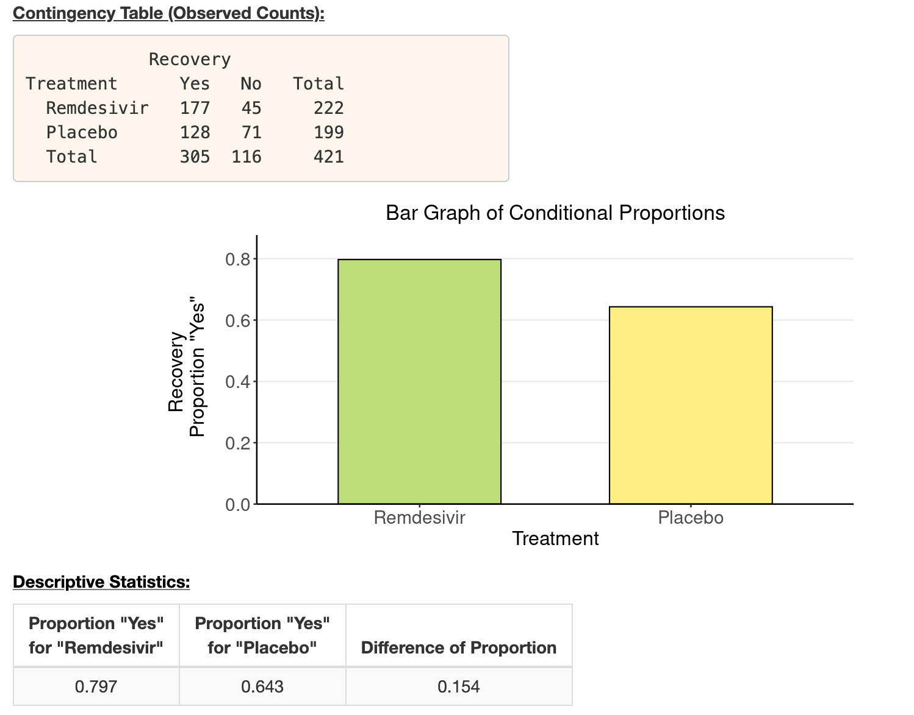
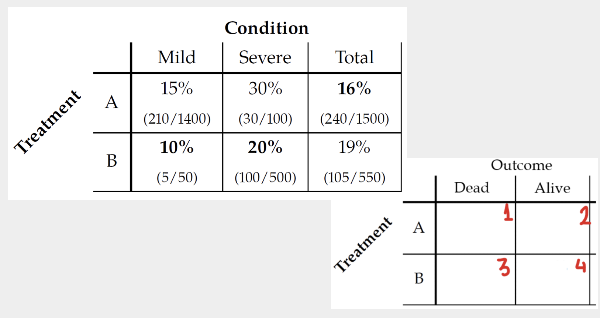

Welcome
This tutorial will show you how to run a chi-square test with a 2x2 contingency matrix and how to visualize the results.
The tutorial focuses on three basic skills:
- How to create a contingency matrix using R
- How to visualise the matrix using the
geom_cols()layer - How to calculate the Chisquare statistic and its associated p-value
Creating a contingency matrix
In this tutorial we are going to use the following contingency matrix as a running example. Feel free to change the code in order to calculate a different dataset. This data compares the effect of Remdisivir against a placebo in treating Covid-19.

We can see from the image that the recovery rate for patients treated with Remdesivir is \(177/222 = 0.797\), and for those treated with Placebo is \(128/199=0.643\), the difference between the two is recovery rates is \(0.154\). Another way of comparing between the effects is by looking at odds and odds ratio.
There are several ways of creating a contingency matrix in R. The simplest way is to create a simple matrix without row names or column names. This method would still work fine for running a chi-square test and quickly check your results. Fill in the blank spaces below and run the code:
# Define a contingency matrix
covid_simple <- matrix(
c(
___, ___, # Observed counts for Remdisivir
___, ___ # Observed counts for Placebo
),
nrow = 2, # Number of rows
byrow = TRUE
)
# Show the results of our contingency table
covid_simple# Define a contingency matrix
covid_simple <- matrix(
c(
177, 45, # Observed counts for Remdisivir
128, 71. # Observed counts for Placebo
),
nrow = 2, # Number of rows
byrow = TRUE
)
# Show the results of our contingency table
covid_simpleYou now have a simple matrix with all the necessary data. However, the matrix is not adorned with row- and column names.
Optionally, you would want to add the row names and column names to
produce an object that is self-explanatory. To do this, you will need to
add the dimnames as an additional argument, provided into
the matrix(...) function. The argument will look like
this:
dimnames = list(
Treatment = c("Remdisivir", "Placebo"), # Exposure (row names)
Recovery = c("Yes", "No") # Outcome. (column names)
)Try to create a new matrix with the dimnames argument in
the code chunk shown below:
# Define a contingency matrix
covid_fancy <- matrix(
)
# Show the results of our contingency table
covid_fancy# Define a contingency matrix
covid_fancy <- matrix(
c(
177, 45, # Observed counts for Remdisivir
128, 71. # Observed counts for Placebo
),
nrow = 2, # Number of rows
byrow = TRUE,
dimnames = list(
Treatment = c("Remdisivir", "Placebo"), # Exposure (row names)
Recovery = c("Yes", "No") # Outcome. (column names)
)
)
# Show the results of our contingency table
covid_fancyWe now have a more self-explanatory matrix. This is not strictly necessary if you just want to run a statistical test, but it would be helpful if you want to visualize your data.
Visualizing the matrix
In order to visualize the results, we must first transform our matrix into a data frame. For this we need to do the following:
- convert our matrix into a dataframe using the
as.data.framefunction. - embed the rownames as a column in our data frame
- pivot the wide shape into a long shape, in which every combination of treatment and outcome is associated with a count value.
covid_long <- covid_fancy |>
as.data.frame() |> # Convert to a data frame
rownames_to_column(var = "treatment") |> # Create a new treatment column
pivot_longer(cols = Yes:No, names_to = "outcome", values_to = "count") # pivot longer
covid_longWe have now transformed our matrix into a data frame (more
specifically a tibble), which is much more amenable to
visualization.
We are now ready to visualize our data frame using the
geom_cols() layer. Run the following code snippet, and then
replace the position argument of geom_col from
position = "dodge" to position = "fill".
covid_long |>
ggplot(aes(x = treatment, y = count, fill = outcome)) +
geom_col(position = "dodge")covid_long |>
ggplot(aes(x = treatment, y = count, fill = outcome)) +
geom_col(position = "dodge")
covid_long |>
ggplot(aes(x = treatment, y = count, fill = outcome)) +
geom_col(position = "fill")Both visualizations suggest that the Remdisivir treatment is associated with better outcomes for patients. But is this difference in outcomes significant? That is something we can establish using a chi-square statistical test.
Chi-square statistical test
We have already established that the average treatment effect is positive: \(177/222 - 128/199 = 0.154\) so that patients treated with Remdisivir have a \(15.4\%\) chance of recovery than those treated with a placebo. We also found that the odds ratio is \(2.18\), suggesting that the odds of recovery for patients treated with Remsidivir is \(2.18\) times the odds of recovery for those treated with placebo. But is this result significant? Or is it possible to obtain this result even if the real effect is zero?
To answer this question, we need to run a chi-square test. To create
a chi-square object, we will use our contingency matrix. You can use
either the simple matrix or the fancy one with the row and columnnames.
You can use this object in order to read out the expected values by
calling chisq_obj$expected. You can also see a summary of
the test by typing the name of the object and running it.
chisq_obj <- chisq.test(covid_simple)chisq_obj <- chisq.test(covid_simple) # You can also use covid_fancy matrix
chisq_obj$expected
chisq_objThe chisquare test provides you with the follwing information:
- The value of the chi-square statistic, in this case \(\chi^2=11.72\)
- The chi-square degrees of freedom, in this case \(df = 1\)
- The associated p-value, in this case the p-value is \(0.00062\), much smaller than one percent.
The small p-value indicates that the result is significant, and that we can safely reject the null hypothesis that treatment and outcome are independent in the population (appropriate assumptions in place).
Sex Bias in Graduate Admissions: Data from Berkeley (Exercise 1)
In 1973, UC Berkeley was sued for gender bias, because their graduate
school admission figures led to a suspicion
of sexual discrimination. The berkeley dataset provides
information about applicants to graduatie school at Berkeley for the six
largest departments in the year 1973 classified by admission and sex.
The variables consist of:
- Dept: the department to which the candidates applied
- Gender: Male or Female
- Admitted and Rejected: the count of applicants admitted or rejected by gender and department
Explore the dataset by scrolling through the data.
Use the snippet below to calculate the total number of applicants admitted and rejected to the six departments in UCL Berkeley, 1973, and test whether there is a significant difference in the admission rate when comparing male and female applicants.
berkeley_aggregated <- berkeley |>
group_by(Gender) |>
summarize(Admitted = sum(Admitted), Rejected = sum(Rejected)) |>
column_to_rownames("Gender")
# Calculate the odds of admission rate among females vs. males
# Rhe odds ratio when comparing female to male
# Calculate the chi-square, degrees of freedom and the p-value berkeley_aggregated <- berkeley |>
group_by(Gender) |>
summarize(Admitted = sum(Admitted), Rejected = sum(Rejected)) |>
column_to_rownames("Gender")
# The odds of admission rate among female to male
odds_table <- berkeley_aggregated |>
mutate(odds = Admitted / Rejected)
# The odds ratio when comparing female to male
odds_ratio <- odds_table["Female", "odds"] / odds_table["Male", "odds"]
print(odds_ratio)
# The chi-square, degrees of freedom and the p-value
chisq.test(berkeley_aggregated)The odds-ratio of admission is about 0.54 when comparing females to males, which means the average odds of females to be admitted is almost half as males, with a very small p-value. That is a significant result that tells us that the average female applicant is much less likely to be admitted than the average male. Of course we already know that this is because the average female applied to more competitive departments, and therefore her chances to get admission were slimmer.
Now run the same exercise for each department separately. So for each department, you want to calculate the odds-ratio of admission when comparing female to male admission, and the associated p-value. Remember that an odds ratio < 1 means that males are preferred, and an odds-ratio > 1 means that females are preferred.
# Filter the data for one department at a time
# For each department, calculate the odds of admission rate among males vs. females
# For each department, calculate the odds ratio
# For each department, calculate the chi-square, degrees of freedom and the p-value # Filter the data for a department
# Change the department code to run for a different department
department_code <- "A"
dep <- berkeley |>
filter(Dept == department_code) |>
column_to_rownames("Gender") |>
select(-Dept)
# The odds of admission rate among males vs. females
odds_table <- dep |>
mutate(odds = Admitted / Rejected)
# Rhe odds ratio when comparing female to male
odds_ratio <- odds_table["Female", "odds"] / odds_table["Male", "odds"]
print(odds_ratio)
# The chi-square, degrees of freedom and the p-value
chisq.test(dep)Well done, now try answering the following questions:
Treatment vs. outcome (Exercise 2)
You want to see if there is a difference between outcomes associated with the two treatments at the margin, i.e., you will be ignoring the difference in the condition of the patients (mild/severe).
To this end, you create a table like the one shown below, recording the observed values:

When you are done use the code chunk below to calculate the expected values, the Chi-Square statistic and the associated p-value.
treatment_outcome <- matrix(
c(
___, ___, # Observed counts for treatment A
___, ___ # Observed counts for treatment B
),
nrow = 2, # Number of rows
byrow = TRUE,
dimnames = list(
Treatment = c("A", "B"), # Treatment (row names)
Outcome = c("Alive", "Dead") # Outcome (column names)
)
)
treatment_outcome
chi_treat_out <- chisq.test(treatment_outcome)
chi_treat_out$___
chi_treat_outHash and submit
Submit your hash in a form
After creating the hash, please copy it, navigate to this form and fill it in and submit. You will need to submit the form once for every lesson you complete in this tutorial.